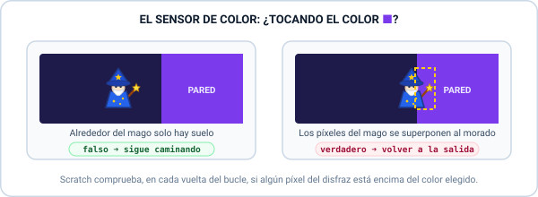
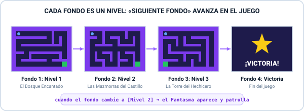
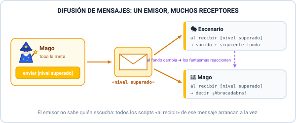
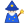
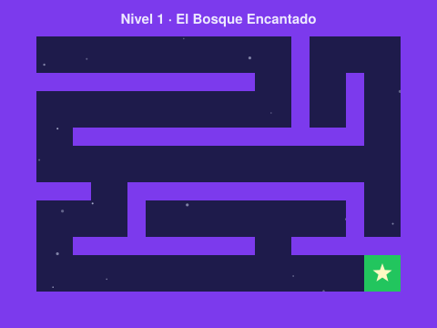
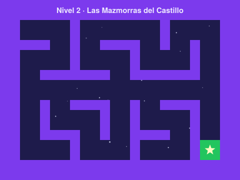
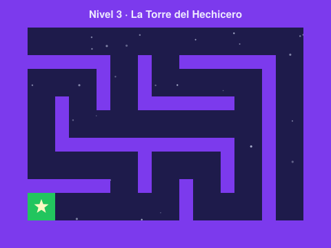
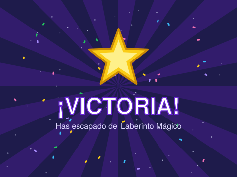

Proyecto 3: El Laberinto Mágico
Diseña un juego de exploración con varios niveles: guía a un mago por laberintos encantados sin tocar las paredes, esquiva a los fantasmas y alcanza el portal mágico. Aprenderás a usar sensores de color, a cambiar de nivel mediante fondos y a coordinar objetos con la difusión de mensajes.
🎯 1. El Objetivo del Juego
Prueba el juego terminado. Pulsa la Bandera Verde y usa las flechas del teclado ⬆️⬇️⬅️➡️ (o la cruceta de pantalla) para llevar al mago hasta la estrella verde:
Reglas del juego:
- El Mago sale siempre desde la esquina superior izquierda
(x: -180, y: 120). - Si toca una pared morada, el sensor de color lo detecta y vuelve a la salida.
- Si llega al portal verde, envía el mensaje «nivel superado» y el escenario cambia al siguiente fondo (nivel).
- Desde el Nivel 2 aparecen fantasmas que patrullan los pasillos: si te tocan, pierdes 1 vida.
- Supera los 3 niveles para llegar al fondo de Victoria. Con 0 vidas, ¡fin del juego!
🧠 2. Las Herramientas del Programador (Conceptos Clave)
En este proyecto descubrirás tres ideas nuevas que usan los videojuegos de verdad: sentir colores, organizar el juego en niveles y hacer que los objetos se comuniquen entre ellos.
Moverse en 4 Direcciones: «Apuntar» + «Mover»
En el Proyecto 2 el robot solo se movía en horizontal con sumar a x (10). En un laberinto necesitamos ir arriba, abajo, izquierda y derecha. La forma más elegante es girar al personaje hacia donde quiere ir y luego avanzar:
- apuntar en dirección (0) → arriba ⬆️ · (180) → abajo ⬇️
- apuntar en dirección (90) → derecha ➡️ · (-90) → izquierda ⬅️
si <¿tecla [flecha arriba v] presionada?> entonces
apuntar en dirección (0)
mover (4) pasos
fin
El Sensor de Color: ¿Estoy Tocando la Pared?
Las paredes del laberinto no son objetos: están dibujadas en el fondo. Entonces, ¿cómo sabe el mago que ha chocado? Con el bloque sensor ¿tocando el color ■?, que devuelve verdadero si algún píxel del disfraz está encima de ese color.

si <¿tocando el color [#7c3aed]?> entonces
iniciar sonido [golpe v]
ir a x: (-180) y: (120)
fin
Con la misma idea podemos tener un segundo color especial: el verde de la meta (#22c55e). Un solo sensor, distintos colores, distintas reacciones. Por eso es muy importante que ninguna decoración del fondo use el color de las paredes o de la meta.
Cambio de Niveles Mediante Fondos
El Escenario puede tener muchos fondos, igual que un objeto tiene varios disfraces. Si dibujamos un laberinto distinto en cada fondo, ¡cada fondo se convierte en un nivel! Los fondos se ordenan en una lista: Nivel 1, Nivel 2, Nivel 3, Victoria.

- cambiar fondo a [Nivel 1]: salta a un fondo concreto (perfecto para la Bandera Verde).
- siguiente fondo: avanza al fondo que viene después en la lista (pasar de nivel).
- cuando el fondo cambie a [Nivel 2]: evento que avisa a cualquier objeto de que empieza ese nivel.
cuando el fondo cambie a [Nivel 2 v]
ir a x: (0) y: (0)
mostrar
Difusión de Mensajes: Objetos que se Hablan
El mago es quien descubre que ha llegado a la meta, pero quien debe cambiar el fondo es el Escenario. ¿Cómo se lo dice? ¡Con un mensaje! Funciona como un megáfono: un objeto grita enviar [nivel superado] y todos los scripts que empiezan con al recibir [nivel superado] se ponen en marcha a la vez.

// Script del Mago (emisor)
si <¿tocando el color [#22c55e]?> entonces
ir a x: (-180) y: (120)
enviar [nivel superado v]
fin
// Script del Escenario (receptor)
al recibir [nivel superado v]
iniciar sonido [hechizo v]
siguiente fondo
Trampas Autónomas: Fantasmas que Patrullan
Un fantasma es un enemigo que se mueve solo: avanza siempre en línea recta y, cuando su propio sensor de color detecta la pared, retrocede y da media vuelta. ¡El sensor de color sirve también para los personajes controlados por el ordenador!
por siempre
mover (2) pasos
si <¿tocando el color [#7c3aed]?> entonces
mover (-2) pasos
girar @turnRight (180) grados
fin
fin
Con fijar estilo de rotación a [izquierda-derecha] el fantasma mira hacia donde va sin ponerse nunca boca abajo.
🛠️ 3. Misiones Guiadas para Construir tu Laberinto
Abre scratch.mit.edu. Puedes empezar desde cero o cargar la plantilla del proyecto (Archivo → Cargar desde tu ordenador), que ya trae los fondos y los personajes. Después completa estas 6 misiones:
Misión 1: Dibuja los Fondos del Laberinto
1. Selecciona el Escenario (abajo a la derecha) y entra en la pestaña Fondos.
2. Con la herramienta Rectángulo pinta el suelo de azul oscuro y, encima, las paredes de un único color morado. Deja pasillos anchos (al menos 40 px) para que quepa el mago.
3. Dibuja un cuadrado verde donde esté la meta.
4. Renombra el fondo como Nivel 1. Haz clic derecho → duplicar para crear Nivel 2 y Nivel 3 y modifica sus paredes para que sean más difíciles.
5. Crea un último fondo llamado Victoria con un mensaje de celebración.
nivel-1.svg, nivel-2.svg, nivel-3.svg, victoria.svg) en la sección de materiales y súbelos con Elige un fondo → Subir fondo. Respeta el orden de la lista: ¡el orden de los fondos es el orden de los niveles!
Misión 2: El Mago y sus 4 Direcciones
Añade el objeto Mago (o cualquier personaje pequeño, ajustando su tamaño hasta que quepa en los pasillos). Haz que empiece en la salida y se mueva con las cuatro flechas:
al hacer clic en @greenFlag
fijar estilo de rotación a [no rotar v]
ir a x: (-180) y: (120)
por siempre
si <¿tecla [flecha arriba v] presionada?> entonces
apuntar en dirección (0)
mover (4) pasos
fin
si <¿tecla [flecha abajo v] presionada?> entonces
apuntar en dirección (180)
mover (4) pasos
fin
si <¿tecla [flecha izquierda v] presionada?> entonces
apuntar en dirección (-90)
mover (4) pasos
fin
si <¿tecla [flecha derecha v] presionada?> entonces
apuntar en dirección (90)
mover (4) pasos
fin
fin
Misión 3: Paredes Mágicas con el Sensor de Color
Dentro del mismo por siempre, debajo de las flechas, añade la comprobación de la pared. Usa el cuentagotas para elegir el morado exacto. Si quieres, añade el sonido golpe desde la pestaña Sonidos.
si <¿tocando el color [#7c3aed]?> entonces
iniciar sonido [golpe v]
ir a x: (-180) y: (120)
fin
✅ Comprueba: al rozar una pared, el mago debe volver a la salida. Si se cuela a través de las paredes, revisa que el color del bloque coincida exactamente con el del fondo.
Misión 4: La Meta, el Mensaje y el Cambio de Nivel
1. En Eventos, abre el desplegable de enviar [mensaje1] → Nuevo mensaje y llámalo nivel superado.
2. En el Mago, dentro del bucle, añade el sensor de la meta verde (primero vuelve a la salida, luego envía el mensaje).
3. En el Escenario, crea los dos scripts que controlan los niveles:
// Mago (dentro del por siempre)
si <¿tocando el color [#22c55e]?> entonces
ir a x: (-180) y: (120)
enviar [nivel superado v]
fin
// Escenario
al hacer clic en @greenFlag
cambiar fondo a [Nivel 1 v]
al recibir [nivel superado v]
iniciar sonido [hechizo v]
siguiente fondo
Misión 5: Fantasmas Guardianes y Vidas
1. Añade el objeto Fantasma. Programa su patrulla con la Bandera Verde (empieza escondido) y hazlo aparecer solo cuando el fondo cambie a Nivel 2:
al hacer clic en @greenFlag
fijar estilo de rotación a [izquierda-derecha v]
esconder
por siempre
mover (2) pasos
si <¿tocando el color [#7c3aed]?> entonces
mover (-2) pasos
girar @turnRight (180) grados
fin
fin
cuando el fondo cambie a [Nivel 2 v]
ir a x: (0) y: (0)
apuntar en dirección (90)
mostrar
2. Crea la variable Vidas (para todos los objetos). En el Escenario, añade dar a [Vidas] el valor (3) tras cambiar fondo a Nivel 1.
3. En el bucle del Mago, comprueba si toca al fantasma:
si <¿tocando [Fantasma v]?> entonces
sumar a [Vidas v] (-1)
ir a x: (-180) y: (120)
si <(Vidas) = (0)> entonces
decir [¡Oh, no! Fin del juego] durante (2) segundos
detener [todos v]
fin
fin
Misión 6: El Nivel 3 y la Victoria Final
1. Duplica el Fantasma (clic derecho → duplicar) para tener Fantasma2. Hazlo aparecer en el Nivel 3 en otro pasillo (por ejemplo, x: -180, y: 0, apuntando en dirección 180 para que patrulle en vertical).
2. Haz que todos los fantasmas se escondan cuando el fondo cambie a Victoria.
3. En el Mago, celebra la victoria y detén el juego:
cuando el fondo cambie a [Victoria v]
ir a x: (0) y: (-110)
decir [¡Lo he conseguido!] durante (2) segundos
detener [todos v]
🔍 4. Pistas y Código de Referencia
¿Algo no funciona como esperabas? Estos son los problemas más habituales en los juegos de laberinto y cómo resolverlos:
Casi siempre es un problema de color: el color del bloque ¿tocando el color ■? no es exactamente el de la pared. Vuelve a elegirlo con el cuentagotas haciendo clic justo encima de una pared. Si dibujaste las paredes con degradados o bordes de otro color, repinta con un color sólido.
Otra causa: pasos demasiado grandes. Con mover (20) pasos el mago puede «saltar» por encima de una pared fina. Usa pasos pequeños (3 a 5) y paredes de al menos 15-20 px.
Existe un modo más amable: en lugar de volver a la salida, el mago rebota y retrocede los mismos pasos que acaba de avanzar. Como el mago sigue apuntando en la última dirección, basta con moverlo «hacia atrás»:
si <¿tocando el color [#7c3aed]?> entonces
mover (-4) pasos
fin
Pruébalo en el simulador con el selector «Al tocar la pared: Rebotar». Un buen diseño de videojuego podría usar el rebote en el Nivel 1 y el modo estricto en los niveles difíciles.
Si primero haces enviar [nivel superado] y después mueves al mago, durante un instante el mago sigue encima de la meta verde. En la siguiente vuelta del bucle vuelve a detectar el verde… ¡y envía el mensaje otra vez!
Solución: primero ir a x: (-180) y: (120) y después enviar el mensaje. ¡El orden de los bloques importa!
Tiembla: si solo gira 180° sin retroceder, el fantasma se queda con un trocito dentro de la pared, el sensor sigue dando verdadero y vuelve a girar sin parar. Añade mover (-2) pasos antes de girar para sacarlo de la pared.
Boca abajo: usa fijar estilo de rotación a [izquierda-derecha] al principio de su script.
Los objetos recuerdan si estaban visibles o escondidos al detener el juego. Por eso el script de Bandera Verde del fantasma debe empezar con esconder. Así, cada partida empieza limpia y el fantasma solo aparece cuando el fondo cambie a su nivel. Es la regla de oro de la inicialización que ya vimos en el Proyecto 1.
al hacer clic en @greenFlag
cambiar fondo a [Nivel 1 v]
dar a [Vidas v] el valor (3)
reiniciar cronómetro
al recibir [nivel superado v]
iniciar sonido [hechizo v]
siguiente fondo
al hacer clic en @greenFlag
fijar estilo de rotación a [no rotar v]
ir a x: (-180) y: (120)
mostrar
por siempre
si <¿tecla [flecha arriba v] presionada?> entonces
apuntar en dirección (0)
mover (4) pasos
fin
si <¿tecla [flecha abajo v] presionada?> entonces
apuntar en dirección (180)
mover (4) pasos
fin
si <¿tecla [flecha izquierda v] presionada?> entonces
apuntar en dirección (-90)
mover (4) pasos
fin
si <¿tecla [flecha derecha v] presionada?> entonces
apuntar en dirección (90)
mover (4) pasos
fin
si <¿tocando el color [#7c3aed]?> entonces
iniciar sonido [golpe v]
ir a x: (-180) y: (120)
fin
si <¿tocando el color [#22c55e]?> entonces
ir a x: (-180) y: (120)
enviar [nivel superado v]
fin
si <<¿tocando [Fantasma v]?> o <¿tocando [Fantasma2 v]?>> entonces
iniciar sonido [fantasma v]
sumar a [Vidas v] (-1)
ir a x: (-180) y: (120)
si <(Vidas) = (0)> entonces
decir [¡Oh, no! Fin del juego] durante (2) segundos
detener [todos v]
fin
fin
fin
al recibir [nivel superado v]
decir [¡Abracadabra!] durante (1) segundos
cuando el fondo cambie a [Victoria v]
ir a x: (0) y: (-110)
decir [¡Lo he conseguido!] durante (2) segundos
detener [todos v]
Fantasma (patrulla horizontal en los niveles 2 y 3):
al hacer clic en @greenFlag
fijar estilo de rotación a [izquierda-derecha v]
esconder
por siempre
mover (2) pasos
si <¿tocando el color [#7c3aed]?> entonces
mover (-2) pasos
girar @turnRight (180) grados
fin
fin
cuando el fondo cambie a [Nivel 2 v]
ir a x: (0) y: (0)
apuntar en dirección (90)
mostrar
cuando el fondo cambie a [Nivel 3 v]
ir a x: (0) y: (0)
apuntar en dirección (-90)
mostrar
cuando el fondo cambie a [Victoria v]
esconder
Fantasma2 (patrulla vertical solo en el nivel 3): el mismo script de Bandera Verde con mover (1.5) pasos, y además:
cuando el fondo cambie a [Nivel 3 v]
ir a x: (-180) y: (0)
apuntar en dirección (180)
mostrar
cuando el fondo cambie a [Victoria v]
esconder
🚀 5. Desafíos Pro (Ampliación)
¿Tu laberinto ya funciona? Conviértelo en una aventura completa con estas mejoras:
Récord de Tiempo
Usa reiniciar cronómetro al empezar. Cuando el fondo cambie a Victoria, haz que el mago diga su tiempo con unir [Tiempo: ] (cronómetro). ¿Y si guardas el mejor tiempo en una variable Récord?
Charcos de Lava
Pinta en el Nivel 3 zonas de un tercer color (rojo). Con un nuevo sensor ¿tocando el color rojo?, la lava te quita una vida. ¡Un color nuevo, una regla nueva!
Llave y Puerta Mágica
Añade un objeto Llave y otro Puerta que bloquee la meta. Al tocar la llave, envía el mensaje abrir puerta: la puerta lo recibe y se esconde. Tendrás que pensar qué hacer si el mago toca la puerta cerrada.
Diseña tu Propio Nivel
Crea un fondo Nivel 4 antes de Victoria. Como usamos siguiente fondo, ¡no tendrás que cambiar ni un bloque del Escenario! Intercambia tu nivel con el de un compañero.
📝 6. Test de Autocomprobación
Responde a estas preguntas para comprobar que dominas los nuevos conceptos:
1. Las paredes del laberinto están dibujadas en el fondo. ¿Qué bloque usa el mago para detectarlas?
2. Un compañero decora su laberinto con estrellas del mismo morado que las paredes. ¿Qué pasará?
3. ¿Por qué el Escenario usa «siguiente fondo» en lugar de «cambiar fondo a [Nivel 2]» al recibir «nivel superado»?
4. Cuando el mago hace «enviar [nivel superado]», ¿quién reacciona?
5. ¿Qué bloque usarías para que el fantasma aparezca justo cuando empieza el Nivel 2?
📦 7. Materiales del Proyecto para Descargar
Proyectos de Scratch listos para abrir, fondos de los tres niveles, personajes con fondo transparente y efectos de sonido:
Plantilla del Alumno
Fondos, mago, fantasmas, sonidos, variable Vidas y mensaje creados. ¡Sin código: a programar!
Solución Completa
Juego terminado con todos los scripts de este tutorial. Ideal para el profesorado.
📥 Descargar SB3
Mago
Personaje principal (24 × 24 px), cabe en pasillos de 40 px.
📥 Descargar SVG
Fantasma
Trampa móvil que patrulla los pasillos y resta vidas.
📥 Descargar SVG

Nivel 1: El Bosque Encantado
Laberinto de iniciación, sin fantasmas.
📥 Descargar SVG

Nivel 2: Las Mazmorras
Pasillo central vigilado por un fantasma.
📥 Descargar SVG

Nivel 3: La Torre del Hechicero
El reto final con dos fantasmas guardianes.
📥 Descargar SVG

Victoria
Fondo final de celebración (último de la lista).
📥 Descargar SVG